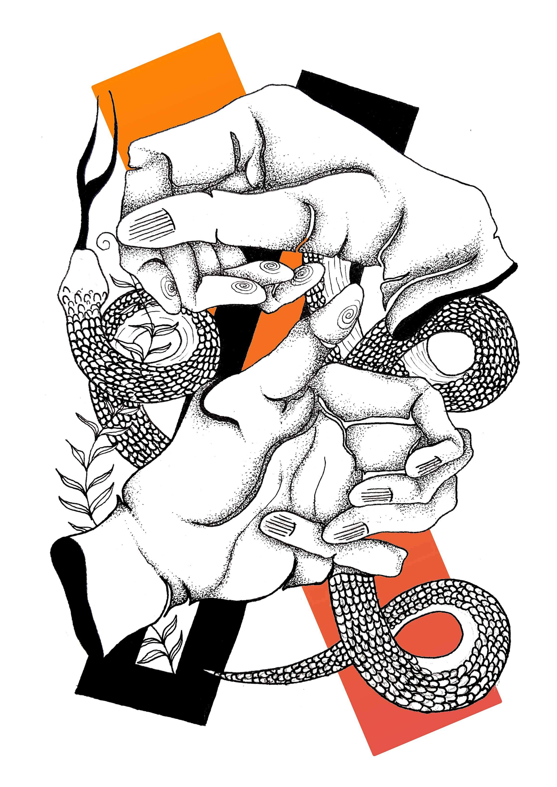
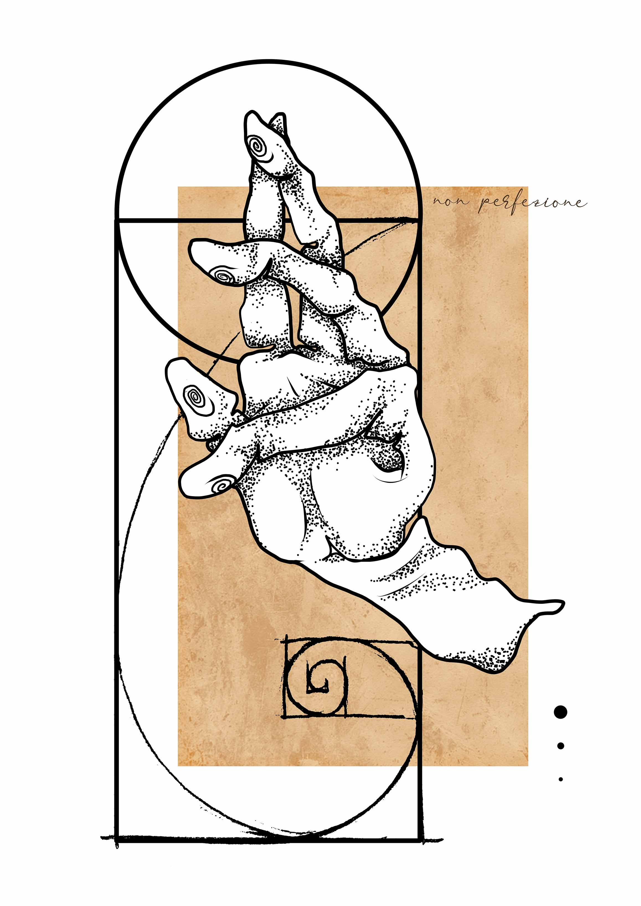
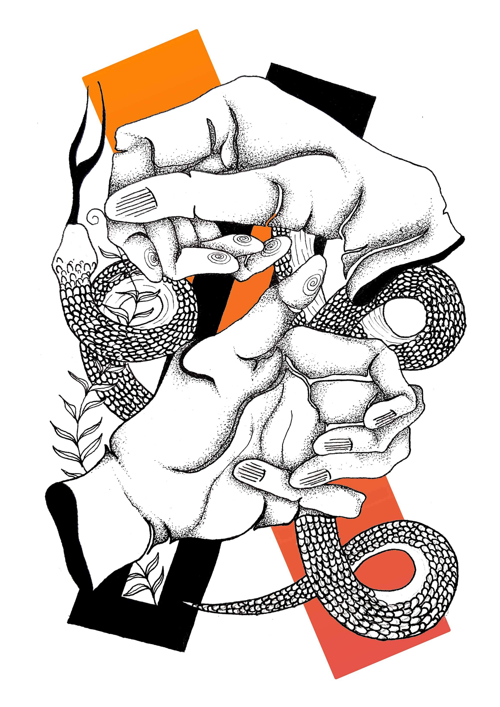
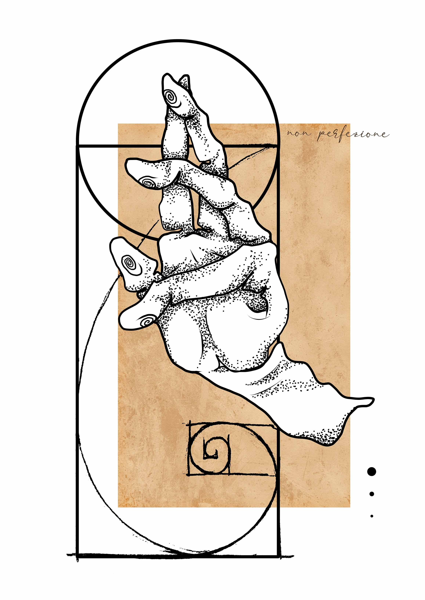
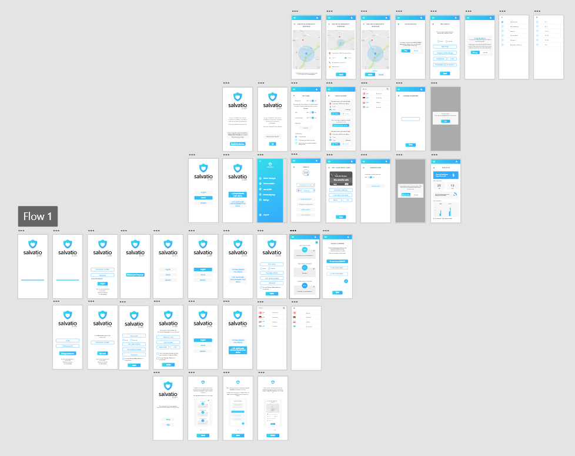

now
business academy aarhus
I'm a student at Business Academy Aarhus on the AP Multimedia Design program.


I'm a student at Business Academy Aarhus on the AP Multimedia Design program.
I had a 4 months collaboration with Salvatio Push start-up company. It was a position of Multimedia Designer so I was responsible for creating Prototype of Salvatio Push App, graphics and presentations for investors. I also handled Salvatio Push Instagram account.
I graduaded from 'Zespól Panstwowych Szkól Plastycznych im. Wojciecha Gersona w Warszawie' with a proffesional diploma of an Artist with Graphic Design specialization.
I also got to learn Sculpture, History of Art, Photography and Cinematography, Painting and 3D art.
 





Prototype created in collaboration with Wojciech Dzwonczyk, while having an Internship in Salvatio Push company. As a goal, we set creating a solution that will be a perfect support for Salvatio Push device, the main company's product.
Role: UI Designer, UX Designer
Program: Adobe XD
Web App created as a group school Exam Project for the company that we come up with. It's a solution just for mobile phones where we used Firebase and Mail/Facebook authentication.
Role: UI Designer, UX Designer, Front-end Developer
Program: Illustrator, Adobe XD, Visual Studio Code, Github, GitKraken
Website solution created for Study Coundeling at BAAA. Project had its focus on UX and SoMe.
Role: UI Designer, UX Designer, Front-end Developer
Program: Adobe XD, Visual Studio Code, Github, GitKraken

Private project of an App, that helps you remeber about watering your plants at home. I mostly focused on creating great amount of animations and original design for this project.
Role: UI Designer, UX Designer
Program: Adobe XD

Prototype and website created for Travelday company
Role: UI Designer, UX Designer, Front-end Developer
Program: Adobe XD, Visual Studio Code, Github, GitKraken
Prototype created in collaboration with Wojciech Dzwonczyk, while having an Internship in Salvatio Push company. As a goal, we set creating a solution that will be a perfect support for Salvatio Push device, the main company's product.
Role: UI Designer, UX Designer
Program: Adobe XD
Problem statement:
Salvatio Push start-up created a device that saves people lifes by sending messages with help request in case of danger. Just with one button click every person can be sure, that someone will come and give help if needed.
The problem was, that to have the device fully working, Salvatio Push also needed an app that will be the easiest thing to use by all the customers. It has a basic design but it wasn't adjusted for the target group and it was missing a lot of funcionalities:
- Notifications in the app
- Settings
- Profile page
- Map with potential needy people
There was also a huge lack of information of how the app works and what are the rules of payments, which is a basic for the client to understand, before using the App.
What we created as a final solution:
PROCESS
Before creating every project final solution, I'm making a full desk and field research. As I focus on design and web development fields in my portfolio, I'm not attaching this parts of the process down below.
Salvatio Push start-up had it own logo before I joined the team, that set the color palette for me for the whole prototype creating process. I started with making a Style-tile, so CEO could see and agree on what to do further and what steps I'll take soon. I took the blue color from logo as a main one and created a gradiend to give it some more depth.
To fill the design with some additional color, I decided on grey tone for boxes in the App.
In the beggining I got some screens of the App that previous designer created, but I found it to crowdy and full of elements that makes it unreadable. Colors were pourly chosen for the background as well as for some elements.
My main thought was that the interface of the App has to be as easy as for the child, because of the main target group - eldery people and women. When Wojciech joined the project, we agreed on using some icons and making the app more visual and intuitive. I was resposible for creating for example an introduction with instructions of how to use the app, statistics page for making users more involved in using the app.
Whole mockup that we created in Adobe XD:
As I also create a lot of graphics, I was asked to make a design for packages, Instagram posts and insturctions for the device that will fit the whole App style. I love challenges that's why I set myself a goal to create a visual identity for Salvatio Push through their SoMe, App, Packages, Instructions and Investors presentations.